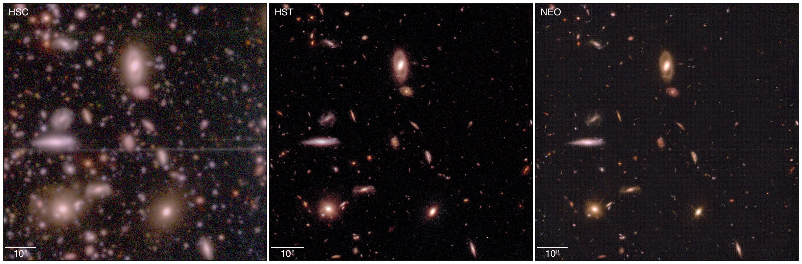
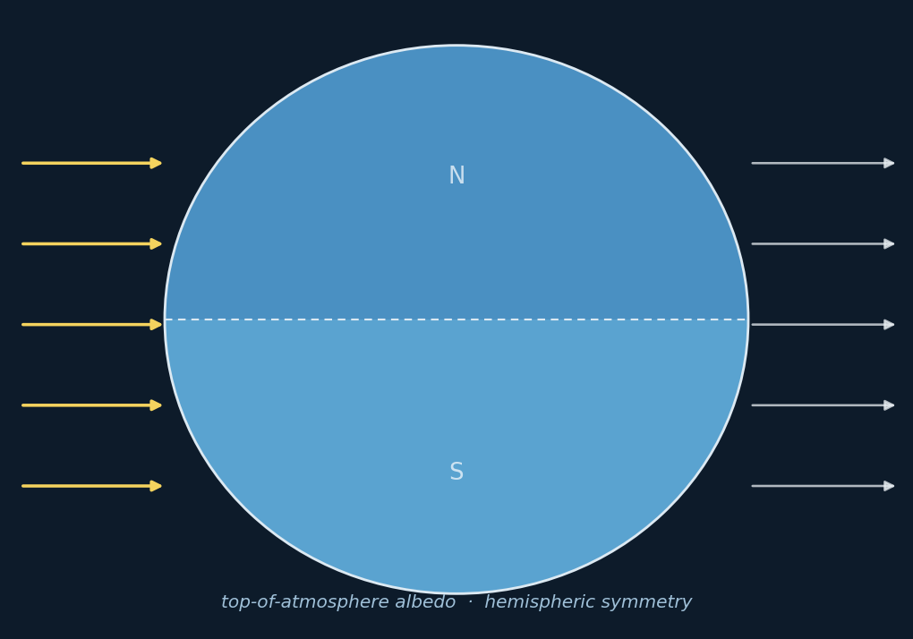

{kind=link}

Publications
Models built to test scientific theory and improve the precision of scientific measurement.
2026

Photometric Super-Resolution for Improving Galaxy Morphological Measurements using Conditional Generative Adversarial Networks
arXiv:2604.20195 (2026)
Morphological parameter estimation from astronomical images is limited by seeing, pixel scale, and depth. NEO is a conditional GAN: a U-Net generator with a super-resolution stage, paired with a PatchGAN discriminator, trained on ~1.5M paired HSC/HST cutouts in the COSMOS field. It reduces effective-radius bias from 0.72 ± 0.18 to 0.04 ± 0.30 and FWHM bias from 0.82 ± 0.05 to −0.02 ± 0.06, generalises to fields never seen during training, and reproduces the HST empirical PSF including its diffraction spikes. Built for LSST-era surveys in combination with HST, JWST, and Roman.

Towards a theory for Earth's albedo stability and hemispheric symmetry in the 21st Century
Communications Earth & Environment (Nature Portfolio), 21 July 2026 · Open access
Understanding of top-of-atmosphere albedo stability and hemispheric symmetry remains largely phenomenological, producing diverging 21st-century estimates. We set out a framework for hypothesis testing and theory development, examine two competing hypotheses (that albedo is constrained by invariant Earth system properties, or is maintained by cloud buffering) and argue for a supporting role for AI methods that express the non-linear processes underlying these phenomena. Response to and relaxation from stratovolcanic eruptions offers a route to falsification.
Patents
Approaches to Predicting the Impact of Marketing Campaigns with Artificial Intelligence and Computer Programs for Implementing the Same
U.S. Patent application 110565.8005.US01
Causal-inference methodology for isolating the true effect of a marketing campaign on a business metric in the presence of trend, seasonality, holidays, and latent confounders.
Press
Making Sense of the Early Universe: How AI and GPUs are helping astronomers work through unprecedented volumes of cosmic data
NVIDIA Blog, April 2026, featuring the NEO super-resolution work
Theses

The Shape of Dark Matter Halos in a ΛCDM Cosmology
Senior thesis, B.S. Physics, University of California, Santa Cruz, 2013
Measurement of dark matter halo concentration and triaxial shape in the Bolshoi and MultiDark N-body simulations, comparing shape estimators across redshift and testing how the relaxation criteria (offset parameter and virial ratio) affect the recovered mass–concentration relation.